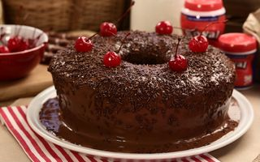

CULINARIA FELIZ
RECEITAS - Bolo de chocolate
Aprenda agora a fazer!
| Ingredientes |
| Trigo |
| Açucar |
| chocolate em pó |
| Fermento |
Modo de preparo
- Pegue todos os ingredientes e coloque na batedeira
- Bata tudo por 10 minutos
- Coloque em uma forma untada
- Deixe no forno por aproximadamente 40 minutos
- Sirva quente!
Foto do Bolo!

VOLTAR
Todos os direitos reservados